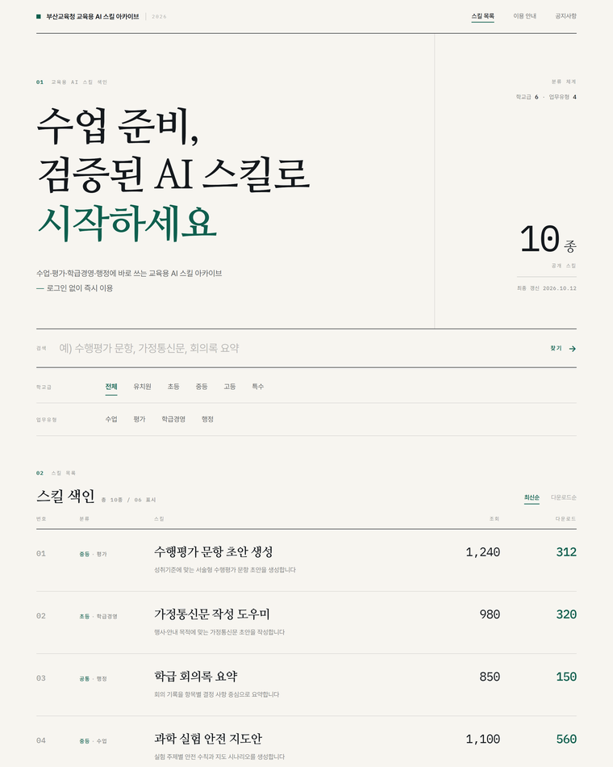
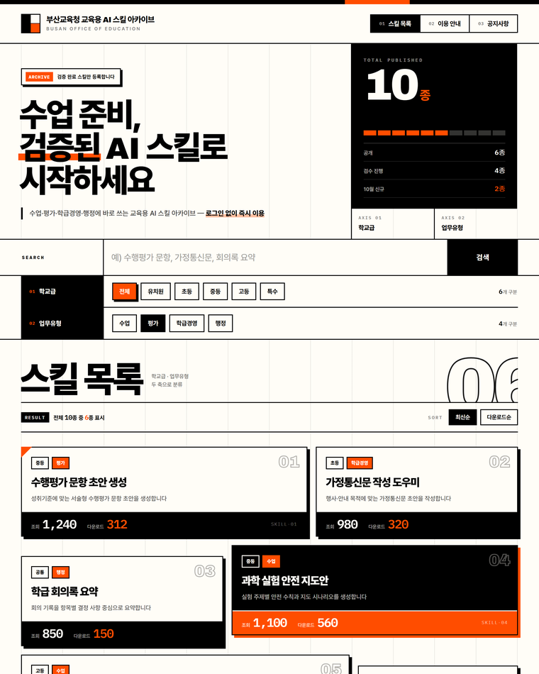
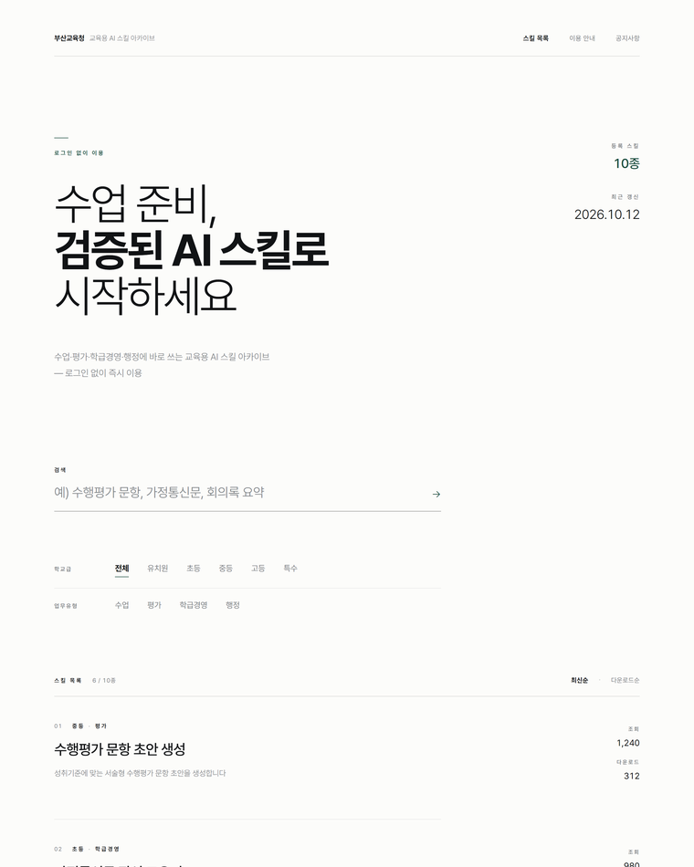

DESIGN REVIEW
화면 디자인 시안 검토 — 12종
검토 대상 스킬 목록 화면
시안 12종 · 채택 3종 융합
AIS-2026-DR / REV.01
동일한 내용(서비스명·문구·분류 축·스킬 6종·수치·공지 3건)을 고정한 상태에서 디자인 문법만 달리한 12종을 제작해
비교 검토하였다. 서체·색·레이아웃 문법이 서로 겹치지 않도록 분리하고, 12종 전부에 대해 내용 준수 검사를 통과시켰다.
검토 결과 D7 도구형 앱셸 · D9 표 인덱스 · D12 신관공서 세 방향을 융합한 안을 추진 방향으로 확정하였다 —
축소 인쇄에서 판독성이 유지되고, 관내 교원의 반복 업무에 맞는 밀도를 확보하며, 공공기관 화면으로서의 격식을 지킨다.

D1편집형 인덱스
명조 대형 헤드라인 · 5열 헤어라인 원장 · 카드 0개
비율 1.90

D3브루탈리스트
2px 검정 밴드 · 12칼럼 격자 노출 · 불균일 블록
비율 1.82

D5정적 미니멀
12칼럼 중 7칼럼만 사용 · 박스 0개 · 극단적 여백
비율 2.55
검토 기준
축소 인쇄 시 판독성 · 반복 업무에 맞는 정보 밀도 · 공공기관 화면으로서의 격식 ·
웹 접근성(KWCAG 2.2) 적용 용이성 · 지면 효율(세로 비율)
융합 결과
D7 의 패싯 레일과 컴팩트 툴바, D9 의 표 인덱스와 등폭 수치, D12 의 기관 띠·12칼럼 격자·관리번호를
하나의 문법으로 통합해 전 화면에 동일하게 적용하였다.